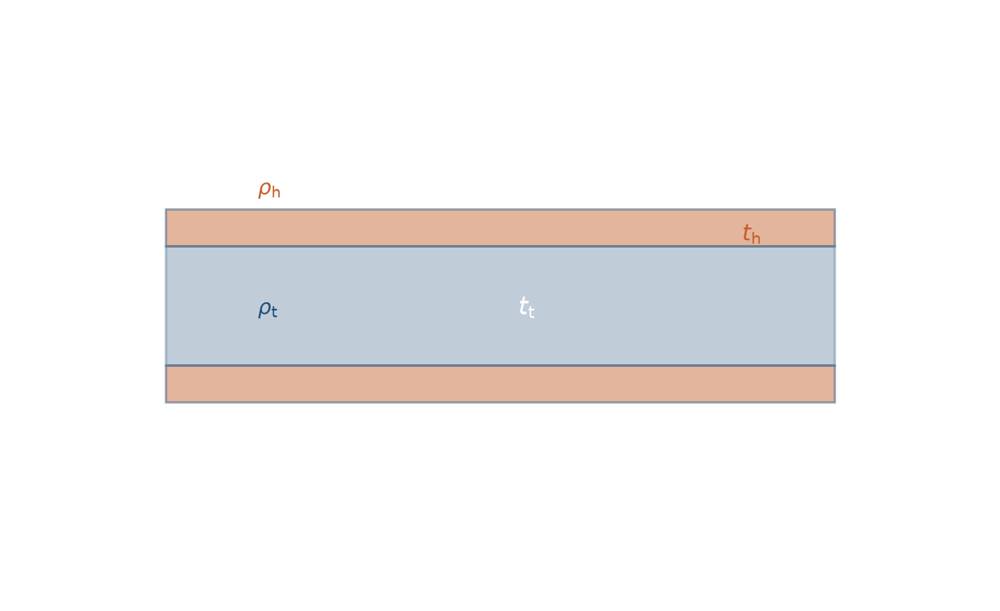
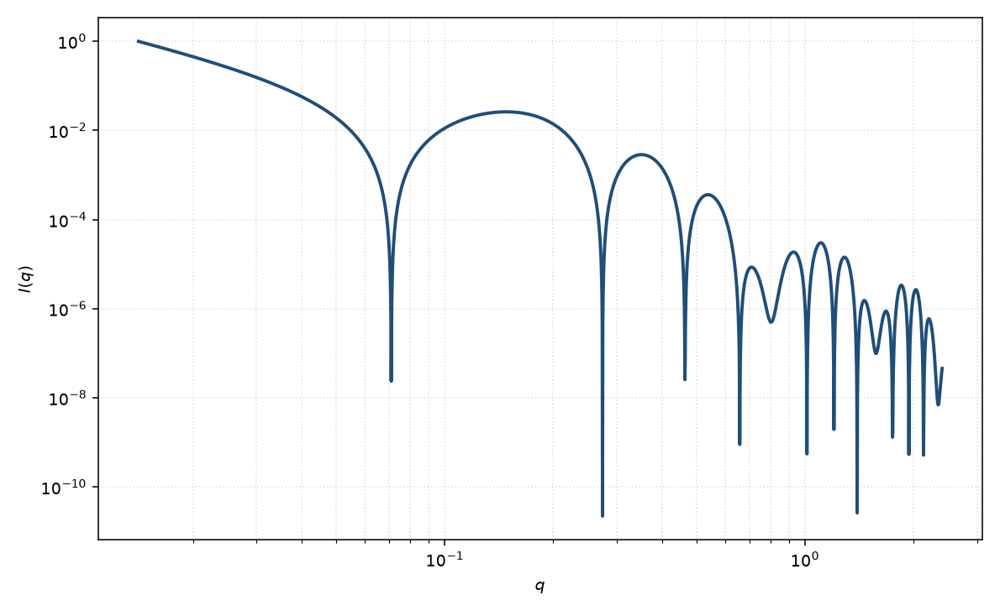

头基–尾链层状
lamellar headgroup
适用场景
当无限片层沿法向可分成头基与尾链两段不同散射长度密度时，用对称的头–尾–头剖面代替单矩形。典型对象是脂质或表面活性剂双层：疏水尾链夹在两层极性头基之间，溶剂在外侧。
相对均匀层状：高 $q$ 的节点位置与深度随 $\rho_{\mathrm{h}}/\rho_{\mathrm{t}}$ 移动，对比变化（H/D 或 SAXS/SANS）能分开两段厚度。若层间出现布拉格峰，应改头基–尾链 Caille 堆叠。弯曲闭合膜用囊泡；有限半径双层盘用核壳双层盘。
物理图像
振幅是三段矩形剖面的一维傅里叶变换：中央尾链厚度 $t_{\mathrm{t}}$、两侧头基各 $t_{\mathrm{h}}$。头基项带相位 $\cos\bigl(q(t_{\mathrm{t}}+t_{\mathrm{h}})/2\bigr)$，因此头、尾衬度可以相消，形式因子在均匀层看不到的 $q$ 处出现额外节点。
粉末平均仍给出 $2\pi/q^2$。总几何厚度 $t_{\mathrm{t}}+2t_{\mathrm{h}}$ 决定振荡总尺度；衬度比决定节点如何分配。Nallet 用该剖面解释溶致层状相的高 $q$ 漫散射。
示意图


核心公式
令 $\Delta\rho_{\mathrm{t}}=\rho_{\mathrm{t}}-\rho_{\mathrm{s}}$，$\Delta\rho_{\mathrm{h}}=\rho_{\mathrm{h}}-\rho_{\mathrm{s}}$，$\mathrm{sinc}\,x=\sin x/x$。对称双层振幅
$$F(q)=\Delta\rho_{\mathrm{t}} t_{\mathrm{t}}\,\mathrm{sinc}\!\left(\frac{q t_{\mathrm{t}}}{2}\right)+2\Delta\rho_{\mathrm{h}} t_{\mathrm{h}}\,\mathrm{sinc}\!\left(\frac{q t_{\mathrm{h}}}{2}\right)\cos\!\left(\frac{q(t_{\mathrm{t}}+t_{\mathrm{h}})}{2}\right).$$粉末平均（孤立片，$S=1$）
$$I(q)=\frac{2\pi\phi}{q^2 t_{\mathrm{bil}}}|F(q)|^2+B,\qquad t_{\mathrm{bil}}=t_{\mathrm{t}}+2t_{\mathrm{h}}.$$$\phi$ 按双层体积计。对比匹配使 $\Delta\rho_{\mathrm{t}}\to 0$ 时，$F$ 退化为两头基的干涉。
参数表
| 参数 | 符号 | 含义 | 单位 | 典型范围 |
|---|---|---|---|---|
| 尾链厚度 | $t_{\mathrm{t}}$ | 疏水核法向厚度 | Å | 20–40 Å |
| 头基厚度 | $t_{\mathrm{h}}$ | 单侧头基厚度 | Å | 5–15 Å |
| 尾链 / 头基 SLD | $\rho_{\mathrm{t}},\rho_{\mathrm{h}}$ | 两段散射长度密度 | Å$^{-2}$ | 组成与氘代决定 |
| 溶剂 SLD | $\rho_{\mathrm{s}}$ | 外侧溶剂 | Å$^{-2}$ | H/D 可调 |
| 极角 / 方位角 | $\theta,\phi$ | 双层法向（二维） | 度 | 取向样品才独立 |
| 标度 / 本底 | $\mathrm{scale}$, $B$ | 前置因子与常数本底 | 与强度单位一致 | 实验相关 |
拟合注意
取向与均匀层状相同：一维是粉末平均；二维才拟合 $\theta,\phi$。剪切取向的膜，弧向宽度与畴大小相关，不要用厚度去吸收。
多分散：头基与尾链厚度分布高度相关，一维曲线上常只能约束 $t_{\mathrm{bil}}$ 与一个衬度比。对比系列或独立面积/组成是解开 $t_{\mathrm{h}}$ 与 $t_{\mathrm{t}}$ 的关键。
磁性：脂质头基通常无磁矩；若膜镶嵌磁性片，磁通道只用磁 SLD 剖面，不必与核通道的 $t_{\mathrm{h}},t_{\mathrm{t}}$ 相同。仪器 smearing 填浅高 $q$ 节点，易被误读成头基变厚。
可辨识性：没有对比变化时，两段 SLD 与两段厚度强相关。出现层状峰时改堆叠模型，不要在孤立片上加假周期。
相近模型
- 层状 — 单矩形剖面，节点只由总厚度决定。
- 头基–尾链 Caille 堆叠 — 同一剖面加上层间热起伏。
- 囊泡 — 弯曲闭合双层，不是无限平面。
- 核壳双层盘 — 有限半径的双层盘，带边缘。
参考文献
- Nallet, F.; Laversanne, R.; Roux, D. Modelling X-ray or neutron scattering spectra of lyotropic lamellar phases: interplay between form and structure factors. J. Phys. II France 1993, 3, 487–502. DOI: 10.1051/jp2:1993146
- Guinier, A.; Fournet, G. Small-Angle Scattering of X-rays. Wiley: New York, 1955.